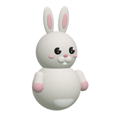

북극성 · 첫 주 퍼널 · 리텐션 곡선과 코호트 · DAU 구성 · 맵별 이동 밀도
실험마다 사전 기준 · 배정 비율 검사(SRM) · 효과 크기와 신뢰구간 · 판정. 위에는 전체 효과를 한 축에.
공지 작성 · 1:1 답장 · 이웃 마을 닉네임 숨기기와 처리 기록

베타테스터 A/B 군별 현황 · 튜토리얼 퍼널 · 일지. 기록 확인용으로 남겨 둡니다.